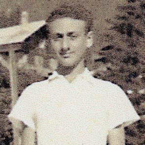

Portrait d’archive
Jacques Choucroun [alias Ferral]
Jacques CHOUCROUN
Jacques BLOCH est né le 13/07/1923 à Paris en France.
Il est déporté à Auschwitz le 20/11/1943 par le convoi n°62. Il est mort en déportation.
Adresses connues :
École fréquentée :
Nom : CHOUCROUN
Prénom(s) : Jacques, Isaac, Simon
Date naissance : 13/07/1923
Âge (ans) : 20
Lieu naissance : Paris
Pays ou département : Seine
Lieu rassemblement : Lyon
Dernière adresse :
Ville : Lyon
Code postal : 69
N° Convoi : 62
Date déportation : 20/11/1943
Informations diverses : Etudiant. Fils de Maurice Moïse et Esther. Jacques devient militant gaulliste en 1940. Il participe, sous la direction de Jean Cassou, au sabotage d'une conférence Grimm sur la collaboration en juin 1942. Recherché, il se cache en Haute-Savoie puis s'installe à Lyon (Rhône) où il continue ses activités dans la Résistance (Groupe Combat et Périclès). Suite à une dénonciation, Jacques est arrêté le 08/09/1943 par la Gestapo. Il est interné au fort de Montluc puis à Drancy. Jacques est déporté à Auschwitz le 20/11/1943 par le convoi 62. Il ne survit pas (Source: CDJC)
Choucroun (Jacques, Isaac, Simon) né le 13 juillet 1923 à Paris (17e) décédé le 1er février 1944 à Auschwitz (Pologne). JO
Lieu de déportation : Auschwitz
Lieu de départ : Drancy
Nombre total de déporté·e·s du convoi : 1200
Gazé·e·s à l'arrivée : 914 (76,2 %)
Survivant·e·s en 1945 : 29 (2,4 %)